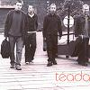

Celtic Lyrics Corner > Artists & Groups > Téada > Téada > A Bhean A' Tí
|  | A Bhean A' Tí |
| Credits : | Traditional; arranged by Téada |
| Appears On : | Téada |
| Language : | Gaeilge (Irish Gaelic) |
| Other Versions : | " Bhean A Ti " on Clannad's album Clannad In Concert |
| Lyrics : | English Translation : |
| Éirigí suas a thogha na bhfear | Rise up, ye stalwart men |
| Is cuirigí píce ar bharr gach cléith | And put the pitch alight on your torch sticks |
| Leagaigí síos iad lucht an droch-chroí | Vanquish those who would do us evil |
| Agus cuirigí dlí na Fraince ar bun | And establish the rule of France |
| Curfá : | Chorus (after each verse) : |
| Agus ó bhean an tí, cén bhuairt sin ort? | And oh woman of the house, what ails you? |
| Ó bhean an tí, fá dhó nó trí | Oh woman of the house, in two years or three |
| Beidh an talamh gan chíos ón bhliain seo amach | From this year out the land will be rent free |
| Ó bhean an tí | Oh woman of the house |
| Ó bhean an tí, nach suairc é sin? | Oh woman of the house, __? |
| Tá jug ar an bhord is tá beoir ag teacht | Here's a jug on the table and the beer's coming |
| Tá arm go leor ag an Duke of York | And the Duke of York has sufficient arms |
| Tá an Francach is an Spáinneach ar bhruach na trá | The French and the Spaniards at the shore's edge |
| Agus b'fhearr liom go mór é ná cómhra ban | And how bitter that is than woman's chatter |
| Ó shuigh mise síos 's mo mhian le m'ais | ___ |
| Ag ól mo cháirt dí mar dheanfad fear | ___ |
| Sé dúirt bean a' tí den chomhrá mhín | ___ |
| Gan airigead síos bí gabháil amach | ___ |
| Ó tharraing mé aníos mo phíosa brac | ___ |
| Nach mairg a bhíos gan é, mo chreach | ___ |
| Do labhair sí arís go carthannach caoin | ___ |
| Nach súifidh tú síos tá siamsa ar fad ort | ___ |
| Mo chreach is mo chrá nuair a bhí mé beag | Alas and alack when I was young |
| In aois mo dhá bhliain sular smaoinigh mé ar olc | Two years old and no evil thought in my mind |
| Nach ndeachaigh mé ar bord nó in arm an Rí | That I didn't join the King's navy or army |
| Sular chaith mé mo shaol ag dul timpeall ort | Instead of spending my life looking after you |